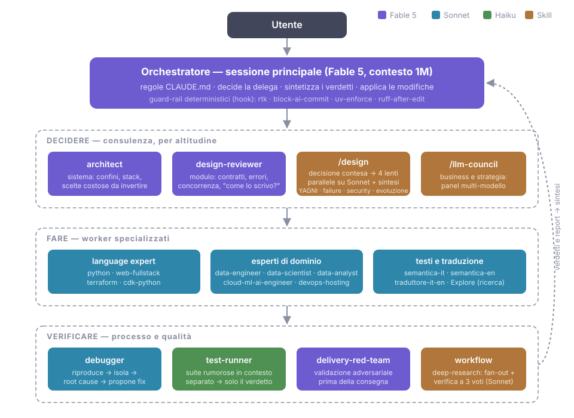

18 - Il setup in chiaro: i file, riga per riga¶
Il cap. 16 racconta la filosofia: tre livelli, cosa va dove. Questo capitolo mostra i file veri del mio setup (luglio 2026), sanitizzati secondo la policy della guida: struttura e regole reali, ma i path e i nomi dei progetti di lavoro sono sostituiti da equivalenti generici (
acme). Non è un modello da copiare intero: è un esempio funzionante da cui rubare i pezzi che servono a te.
La mappa dei file¶
Prima dei blocchi, l'albero: tutto il setup globale vive in ~/.claude/, e
ogni riga qui sotto ha la sua sezione in questo capitolo.
~/.claude/
├── CLAUDE.md regole sempre attive (importa RTK.md)
├── settings.json permessi, hook, modello, plugin
├── agents/ 17 file .md: la squadra fissa
├── skills/ 12 cartelle: le procedure
├── commands/ /commit, /standup
├── hooks/ 4 script sh: i guard-rail
└── workflows/ deep-research.js: orchestrazioni multi-agente
I profili (in fondo al capitolo) montano questa base in symlink e ci
aggiungono il loro stato; i repo ci sovrappongono il loro .claude/ di
progetto. Tre livelli, un solo posto in cui ogni cosa è definita.
Permessi: allow, deny, ask¶
Il blocco permissions del mio ~/.claude/settings.json globale usa tutte e
tre le liste, e ognuna ha un mestiere diverso:
{
"permissions": {
"allow": [
"Bash(rtk git status:*)",
"Bash(rtk git diff:*)",
"Bash(rtk git log:*)",
"Bash(rtk git show:*)",
"Bash(rtk git branch:*)",
"Bash(rtk ls:*)",
"Bash(rtk read:*)",
"Bash(rtk grep:*)",
"Bash(rtk rg:*)",
"Bash(rtk wc:*)",
"Bash(rtk git add:*)",
"Bash(rtk git commit:*)",
"Bash(rtk git push:*)",
"WebSearch",
"WebFetch(domain:github.com)",
"WebFetch(domain:raw.githubusercontent.com)",
"WebFetch(domain:www.npmjs.com)",
"Bash(make check)",
"mcp__atlassian__getJiraIssue",
"mcp__atlassian__searchJiraIssuesUsingJql"
],
"deny": [
"Read(~/.config/acme/**)",
"Read(**/.env)",
"Read(**/.env.local)",
"Read(**/credentials.json)",
"Read(**/*.pem)",
"Read(**/*.key)",
"Read(~/.ssh/**)",
"Read(~/.aws/credentials)",
"Bash(*secrets.env*)",
"Bash(*.config/acme*)",
"Bash(*ACME_LLM_API_KEY*)",
"Bash(*id_rsa*)",
"Bash(*.ssh/*)"
],
"ask": [
"Bash(* .env*)",
"Bash(*.pem*)",
"Bash(*.key*)",
"Bash(*credentials.json*)",
"Bash(*~/.aws/*)"
]
}
}
L'allow contiene solo operazioni a rischio zero che farei approvare a
occhi chiusi cento volte al giorno: ispezione git in sola lettura (via rtk,
cap. 15), lettura di file e ricerca, il gate di build del repo principale, i
domini di documentazione che consulto sempre, due tool Jira in sola lettura.
git add/commit/push sembrano un'eccezione al principio, ma sono coperti
altrove: la regola "mai committare senza che te lo chieda" vive nel CLAUDE.md
e un hook (sotto) fa la guardia al contenuto del messaggio. I due paletti che
non supero: mai interpreti (python, node: è esecuzione arbitraria con
un altro nome) e mai curl generico (può fare POST, quindi esfiltrare
qualunque cosa abbia appena letto).
Il deny protegge i segreti, e la sua storia è una lezione di sintassi in tre atti:
- I path assoluti a slash singolo non funzionano. Nelle regole sui file,
Read(/home/io/...)è interpretato relativo alla directory del file di settings: la mia prima deny-list non bloccava niente. Un path assoluto si scrive//path(doppio slash) oppure, meglio, con~/. - Non enumerare i comandi: descrivi la stringa sensibile. La prima
versione aveva 32 regole (
cat,head,xxd,dd,strings…) e perdeva comunque: la lista dei modi di leggere un file è infinita (bash -c,perl, una redirect<). Le regole Bash accettano wildcard anche in mezzo al pattern, quindiBash(*secrets.env*)nega qualunque comando che nomini quel file, con qualunque binario. Tre regole così coprono strettamente più delle 32 di prima. - Il matching su stringa resta aggirabile in linea di principio (path
indiretti tipo
cat ~/.config/ac*/sec*). La versione a tenuta stagna è il sandbox confilesystem.denyRead, che blocca la lettura a livello kernel per qualunque processo figlio. Sulla mia lista delle cose da valutare.
L'ask è la scoperta più recente: la via di mezzo che mancava. Un pattern
largo come "qualunque comando che tocca un .env" in deny farebbe danni:
cp .env.example .env è un'operazione legittima che i miei fixture fanno di
mestiere. In ask, invece, il comando si ferma e chiede: l'uso sospetto lo
nego io a mano, quello legittimo passa con un invio.
Deny o ask?
Il criterio che ne ho ricavato: deny solo dove un falso positivo è quasi impossibile; ask dove il pattern è largo.
Con deny non c'è appello, e una regola che combatte contro di te finisce cancellata, il che è peggio di una regola che chiede.
Hook: le regole che valgono sempre¶
Quattro hook globali e uno di progetto, tutti figli dello stesso criterio (cap. 07 e 16): se una violazione "quasi mai" è comunque troppo, la regola merita un hook.
PreToolUse su Bash, primo hook: rtk. Una riga che riscrive in trasparenza
i comandi nella loro variante compressa (cap. 15). Nessuna semantica, solo
risparmio di token su ogni progetto. Due irrobustimenti recenti, usciti da
una design review sugli hook: il binario è puntato per path assoluto
(primo della catena, rtk vede ogni comando; risolverlo via $PATH era il
vettore della name-collision documentata nel suo stesso README) ed è avvolto
in timeout 5. Se si blocca, l'hook fallisce non-bloccante e il comando
passa senza riscrittura: si perde il risparmio token di una chiamata, non la
sessione.
PreToolUse su Bash, secondo hook: il guardiano dei commit. Il file è
~/.claude/hooks/block-ai-commit.sh, e lo riporto intero perché è il mio
esempio preferito di hook piccolo fatto bene:
#!/bin/sh
# PreToolUse hook (Bash): block git commit messages that mention AI assistance.
# Exit 2 = block the tool call and show stderr to the model.
cmd=$(jq -r '.tool_input.command // empty')
case "$cmd" in
*"git commit"*) ;;
*) exit 0 ;; # (1)!
esac
# Narrow patterns on purpose — "anthropic" alone would block legitimate
# commits about Anthropic SDK code; widen only if something slips.
if printf '%s' "$cmd" | grep -qiE 'co-authored-by:[^"]*\b(claude|anthropic)|generated with|noreply@anthropic\.com|🤖'; then # (2)!
echo "Commit bloccato: il messaggio viola le regole del CLAUDE.md. Riscrivilo." >&2
exit 2 # (3)!
fi
exit 0
- Esce subito se il comando non è un commit: zero costo sul 99% dei casi.
- I pattern sono volutamente stretti (
anthropicda solo bloccherebbe commit legittimi su codice che usa l'SDK Anthropic), perché un guardiano che grida ai falsi positivi finisce disattivato. - L'exit code 2 blocca il tool e spiega al modello il perché, così si corregge da solo al colpo dopo.
Le scelte che contano: esce subito se il comando non è un commit (zero costo
sul 99% dei casi); l'exit code 2 blocca il tool e spiega al modello il
perché, così si corregge da solo al colpo dopo; i pattern sono volutamente
stretti (anthropic da solo bloccherebbe commit legittimi su codice che usa
l'SDK Anthropic), perché un guardiano che grida ai falsi positivi finisce
disattivato. La prosa nel CLAUDE.md spiega l'intento; l'hook lo garantisce.
PreToolUse su Bash, terzo hook: l'esattore di uv. La regola "Python solo
con uv" ha vissuto mesi nel CLAUDE.md come prosa; uv-enforce.sh l'ha
promossa a garanzia, lo stesso salto del guardiano dei commit. Blocca
python, pip e pytest nudi in posizione di comando e suggerisce
l'equivalente (uv run, uv add, uv run pytest); lascia passare ciò che è
già uv/uvx e i comandi dove quelle parole sono solo argomenti (git log
--grep pytest non si tocca). Nota di metodo: prima di consolidare questi
script in un dispatcher unico ho fatto passare la scelta da un panel di
quattro lenti (la skill /design, più avanti). Verdetto unanime per gli
script separati: l'array hooks[] dei settings è già il dispatcher,
fornito dalla piattaforma, con una proprietà che una fusione perderebbe: il
bug di una regola non può spegnere le altre.
PostToolUse globale: ruff dopo ogni edit. ruff-after-edit.sh: dopo ogni
modifica a un file .py, ruff check --fix più ruff format, poi un
re-check; se restano errori li mostra al modello con exit 2, e il modello li
corregge al colpo dopo. Tre dettagli da hook adulto: il fallimento del
format viene segnalato invece di sparire (una scrittura interrotta a metà
non deve passare in silenzio); un flock sul file serializza i subagent
paralleli che toccano lo stesso modulo; uvx ruff legge comunque la config
del progetto dal suo pyproject. Vive globale, a differenza dell'autoformat
qui sotto, perché la regola è mia e vale su ogni repo Python che tocco.
PostToolUse di progetto: l'autoformat. Nel .claude/settings.json del
repo principale, su Edit|Write:
{
"hooks": {
"PostToolUse": [{
"matcher": "Edit|Write",
"hooks": [{ "type": "command",
"command": "make format >/dev/null 2>&1 || true" }]
}]
}
}
Vive a livello repo perché è il formatter di quel repo a decidere; il
|| true è essenziale: un hook di comodità non deve mai bloccare il lavoro
se fallisce.
Agenti: la squadra fissa¶
Diciassette agenti globali in ~/.claude/agents/, tutti nati con la regola
just-in-time del cap. 16 (un ruolo ricorre due volte → si persiste). La
divisione che conta è per altitudine della decisione, e governa anche il
modello assegnato a ciascuno:

- Chi giudica eredita il modello di sessione, il migliore disponibile:
architectper il sistema (confini, stack, scelte costose da invertire),design-reviewerper il modulo (contratti, strategia errori, concorrenza: la domanda "come è giusto scrivere questa cosa?") edelivery-red-team, il validatore adversariale che passa il diff al setaccio prima di ogni consegna. Sono i ruoli il cui giudizio è il prodotto: lì il ragionamento profondo paga il suo prezzo. - Chi lavora sta su un modello medio, pinnato: i language expert
(
python-expert,web-fullstack,terraform-expert,cdk-python-expert), gli esperti di dominio (data-engineer,data-scientist,data-analyst,cloud-ml-ai-engineer,devops-hosting), ildebugger(riproduce → isola → root cause) e i tre di prosa (semantica-it/semantica-en, gli unici con Edit/Write, etraduttore-it-en, i gemelli.en.mddi questa guida). - Chi esegue meccanicamente sta sul modello piccolo:
test-runnerfa girare la suite in contesto isolato e riporta solo il verdetto; il rumore resta fuori dalla sessione.
Il pattern comune agli advisor non cambia: tool in sola lettura (Read, Grep, Glob, Bash), "consiglia e disegna diff, non applica edit di massa", e una description che delimita il confine con gli agenti affini ("NOT for Terraform → usa terraform-expert"): è quella delimitazione che permette alla sessione di scegliere l'agente giusto senza sbagliare.
I tre tier
Una domanda sola riassume il criterio dei tre tier: questo ruolo giudica, lavora o esegue?
La sessione principale resta l'orchestratore sul modello di punta;
chi giudica lo affianca alla pari, chi lavora e chi esegue scala di tier. E
l'altitudine risolve il buco che i language expert da soli lasciavano
scoperto: scrivere in un linguaggio ormai è la parte facile, scegliere come
scrivere è la sfida. Ora quella fascia ha i suoi ruoli: design-reviewer
per il consulto quotidiano, la skill /design (sotto) quando la decisione è
contesa.
A livello repo se ne aggiungono di specifici: nel repo principale un
gate-runner che esegue il build gate e un guardiano read-only che rivede
i diff sulle invarianti architetturali (cap. 16), committati in
.claude/agents/, così valgono per chiunque cloni il repo.
Come parte la delega (senza che io la chieda)¶
Non c'è nessun meccanismo nascosto: l'invocazione automatica è tutta scritta in due posti che la sessione legge sempre.
Il primo è la description dell'agente. In ogni sessione Claude ha davanti la lista degli agenti disponibili con le loro description, e quando valuta come affrontare un task le usa come regole di instradamento. Per questo le mie non sono riassunti ma regole di routing: dicono quando usare l'agente, elencano i casi tipici e, soprattutto, delimitano i confini con i vicini ("NOT for Terraform → use terraform-expert"). Una description vaga produce un agente che non viene mai scelto, o peggio scelto a sproposito: è il campo più importante del file, e lo riscrivo più spesso del prompt.
Il secondo è il CLAUDE.md globale, che trasforma il principio in riflesso. La regola "delega agli agenti come default" da sola pesava poco; quello che funziona è la mappa dei casi accanto: bug non banale → debugger prima di toccare codice; suite rumorose → test-runner; scelte di stack → architect prima di implementare; design di modulo → design-reviewer prima di implementare; decisione di design contesa → /design; esplorazione ampia → Explore; testi da umanizzare → semantica-it/semantica-en. Quando il caso si presenta, la sessione non decide se delegare: riconosce la riga della mappa e delega (cap. 16: gli esempi battono i precetti).
E poi c'è la terza via, la più semplice: lo chiedo io per nome ("fai girare il debugger su questo"). Vale sempre, e vince sulle altre due.
Come li orchestro¶
Tre pattern coprono quasi tutto il mio uso:
- In parallelo quando i lavori sono indipendenti. Più agenti lanciati nello stesso messaggio girano in concorrenza: la review Python e la review IaC dello stesso diff non si aspettano a vicenda. È il modo più economico di comprare tempo.
- In pipeline quando l'output di uno è l'input dell'altro. Il caso di
scuola è questa guida: ogni capitolo nuovo passa per semantica-it
(revisione italiana) → traduttore-it-en (il gemello
.en.md) → semantica-en (rifinitura inglese). Io scrivo, la catena rifinisce, e non la rilancio mai a mano: è codificata in una skill (sotto). - In background quando il risultato non serve subito. Un'analisi lunga parte, io continuo a lavorare, la notifica arriva a fine corsa. Un agente già lanciato, poi, si può continuare con un messaggio di follow-up invece di ripartire da zero: il suo contesto sopravvive alla risposta.
Il filo comune: la sessione principale resta il direttore, gli agenti riportano conclusioni (un verdetto, un diff proposto, una diagnosi), mai il rumore del percorso. È il motivo per cui i miei advisor non editano: se l'agente applicasse le modifiche da solo, l'orchestrazione diventerebbe sorveglianza.
Skill e slash command: le procedure¶
Dodici skill globali in ~/.claude/skills/, raggruppabili per mestiere:
- Prosa e bilinguismo:
humanize(orchestra i revisori semantica-*),sync-en(trova i capitoli italiani cambiati via git e fa ritradurre i gemelli inglesi: è la skill che mantiene bilingue questa guida). - Catture di schermo:
screenshot(l'utente mostra qualcosa a me),screenshot-autonomo(io guardo lo schermo da solo),screenshot-recenti(riusa scatti già fatti). Tre skill separate perché il trigger è diverso: metterle insieme confondeva la scelta. - Browser:
playwright-browser, il nucleo generico su cui altre skill di dominio (demo, documentazione visuale) si appoggiano. - Conoscenza:
graphify(cap. 16). - Decisioni:
llm-council(cinque advisor su modelli diversi per le decisioni di business con posta in gioco vera) e il suo gemello ingegneristicodesign: una decisione di design contesa passa da quattro lenti parallele (semplicità/YAGNI, robustezza, sicurezza ai confini, evoluzione/operabilità), ognuna forzata a giudicare solo dal suo punto di vista, e la sintesi decide i conflitti invece di mediarli. Le lenti sono prompt dentro la skill, non agenti permanenti: la tassonomia resta magra e una lente nuova costa un paragrafo. - Igiene:
clean-conversationsepurge-project(pulizia della storia per progetto),new-agent(lo scaffolding della regola just-in-time: quando un ruolo ricorre, questa skill lo persiste).
Più due slash command in ~/.claude/commands/: /commit (stage, commit
logici, branch e push secondo le mie convenzioni) e /standup (il "dov'ero
rimasto" sul repo corrente). La differenza pratica rispetto alle skill: i
command sono procedure che invoco io, le skill sono procedure che anche la
sessione può scegliere di usare da sola quando riconosce il caso.
Come vengono usate (le due porte d'ingresso)¶
Il meccanismo è lo stesso degli agenti: in ogni sessione Claude vede
l'elenco delle skill con le loro description, e sono le description a fare
da grilletto. Le mie contengono frasi di trigger esplicite ("TRIGGER:
'umanizza', 'sa di AI', 'de-bot questo testo'") e i non-casi ("NON per
codice sorgente; NON per lo screenshot del desktop → usa screenshot"):
quando il mio prompt contiene il caso, la sessione carica la skill da sola.
La seconda porta sono io con /nome, che forza l'invocazione senza
interpretazione. Stessa lezione delle description degli agenti: non
descrivono, instradano.
La cosa più utile che ho capito scrivendole: una skill è un orchestratore
scritto. humanize non rivede testi: smista i file ai revisori
semantica-it/semantica-en in parallelo e riporta un campione delle
riscritture. sync-en non traduce: trova via git i capitoli italiani
cambiati, manda i gemelli a traduttore-it-en, passa semantica-en sul
nuovo materiale e rigenera il sito. La pipeline di traduzione di questa
guida, insomma, non è una mia abitudine: è un file. Se un'orchestrazione ti
riesce bene due volte a mano, la terza volta scrivila in una skill: è la
regola just-in-time applicata ai processi invece che ai ruoli.
Profili: l'anatomia dell'isolamento¶
Il cap. 16 descrive i profili come livello "cliente"; nel mio setup reale la
divisione è per attività, non per committente: delivery (il lavoro di
consegna), personale (i progetti miei, questa guida inclusa) e scouting
(esplorazione di strumenti e tecnologie). Stesso meccanismo, taglio diverso:
il confine giusto è quello che separa i contesti mentali, e per me due
attività sullo stesso codice sono più diverse di due clienti sulla stessa
attività.
Dentro ogni profilo, la struttura dice esattamente cosa è condiviso e cosa è
isolato, ed è tutta fatta di symlink verso ~/.claude/:
~/.cloak/profiles/delivery/
├── CLAUDE.md -> ~/.claude/CLAUDE.md (condiviso)
├── settings.json -> ~/.claude/settings.json (condiviso: permessi e hook)
├── agents -> ~/.claude/agents (condiviso)
├── commands -> ~/.claude/commands (condiviso)
├── skills -> ~/.claude/skills (condiviso)
├── plugins -> ~/.claude/plugins (condiviso)
├── .credentials.json (SUO: login e token)
├── .claude.json (SUO: MCP e stato dei progetti)
├── projects/<repo>/memory/ (SUA: la memoria persistente)
└── sessions/, history, plans/, jobs/ (SUOI)
La riga più importante è settings.json: anche i permessi e gli hook sono
condivisi. La deny-list sui segreti e il guardiano dei commit valgono
identici in ogni profilo, perché sono regole su chi sono io, non su cosa sto
facendo. Resta per-profilo, invece, lo stato: le credenziali (ogni profilo ha il
suo login), i server MCP con la loro autenticazione e, soprattutto, la
memoria per progetto. Quest'ultima è il beneficio più
concreto: lo stesso repo ha memorie diverse in delivery e in scouting,
perché le lezioni del consegnare non sono le lezioni dell'esplorare.
MCP: pochi, e al livello giusto¶
La lista dei server MCP è volutamente corta, e il dove conta quanto il cosa:
- In ogni profilo:
tolaria(il server della mia app di note) eatlassian(Jira). I server sono registrati ovunque, ma l'autenticazione è per-profilo: ogni profilo ha le sue credenziali, e un profilo senza login a un Jira non può scriverci per costruzione, non per disciplina (cap. 16). - Per directory:
playwrightesiste solo nella directory demo di questa guida, nel profilo dove ci lavoro: serve a pilotare il browser per gli screenshot dei capitoli, e nessun'altra sessione ha motivo di averlo nel contesto. È il criterio "livello più basso" portato all'estremo.
Il criterio è lo stesso dei tre livelli: un MCP va al livello più basso in cui serve. E ogni server in più è superficie di contesto e di rischio: il no motivato (cap. 16, il server di ricerca web scartato) fa parte del setup quanto i sì.
Workflow: l'orchestrazione scritta fino in fondo¶
Le skill orchestrano agenti; i workflow orchestrano interi harness
multi-agente con controllo di flusso deterministico (fan-out, verifiche a
voti, sintesi). Ne tengo uno solo, ma personalizzato:
~/.claude/workflows/deep-research.js, la mia copia del workflow di ricerca
(fan-out di ricerche web, verifica adversariale a 3 voti per claim, report
citato) con una modifica che vale la pena raccontare: il modello è
assegnato per fase. Le fasi meccaniche e larghe (fetch delle fonti,
verifica dei claim: decine di agenti) girano sul modello medio; la
decomposizione della domanda e la sintesi finale (pochi agenti, tutto il
giudizio) ereditano quello di sessione. È la regola dei tier degli agenti
applicata dentro un singolo workflow, e l'ho imparata nel modo giusto: la
prima esecuzione lanciava tutto sul modello di punta, e non serviva.
Il resto: plugin, statusline, modello¶
Poche righe chiudono il quadro. Due plugin: ponytail (un output style che
impone la soluzione più pigra che funziona, YAGNI come modalità permanente) e
langfuse dal marketplace ufficiale (tracing e evals per i sistemi LLM su
cui lavoro); registrato anche il marketplace community di Anthropic, plugin
di terze parti con screening automatico, che si esplora con /plugin. Una
statusline custom (statusline.sh: branch, modello e contesto residuo a
colpo d'occhio); il modello pinnato in settings con la finestra di contesto
estesa. Tutto il resto è default: ogni impostazione non scritta è
un'impostazione che non va mantenuta.
In sintesi¶
Il file più importante di questo capitolo non è nessuno dei blocchi JSON: è il criterio dietro ognuno. L'allow si misura sui transcript, non si immagina; il deny si scrive per stringhe sensibili, non per elenchi di comandi; l'ask copre la zona grigia; le regole inderogabili diventano hook. Gli agenti nascono quando un ruolo ricorre, mai prima; il modello di ciascuno segue la domanda "giudica, lavora o esegue?"; le description di agenti e skill instradano, non descrivono; le orchestrazioni che ripeti diventano skill. L'isolamento tra contesti lo fanno i profili, e ciò che vale ovunque viaggia in symlink; gli MCP stanno al livello più basso che li giustifica. Se il tuo setup applica questi criteri, assomiglierà al mio solo dove i nostri mestieri coincidono, ed è esattamente il punto.